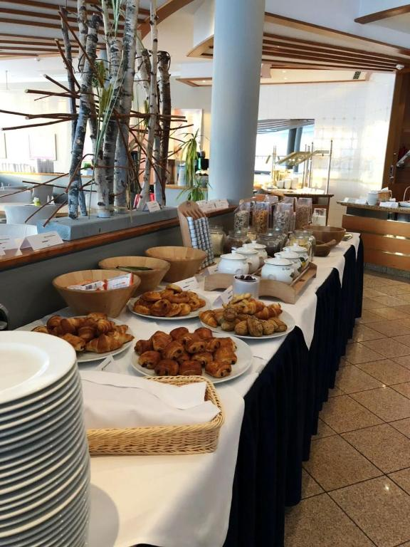
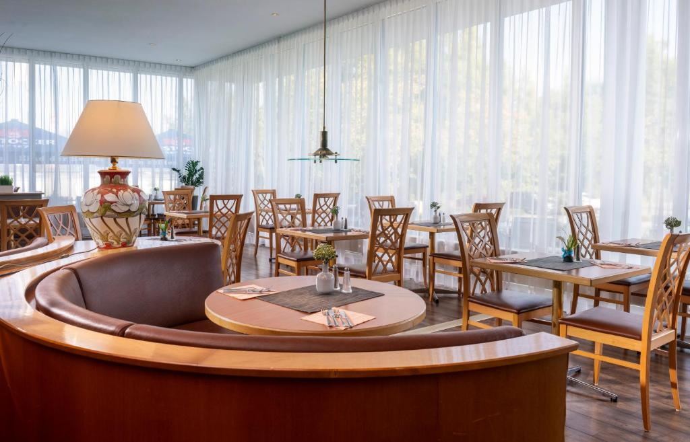
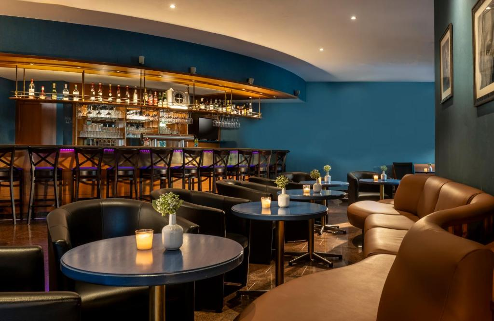
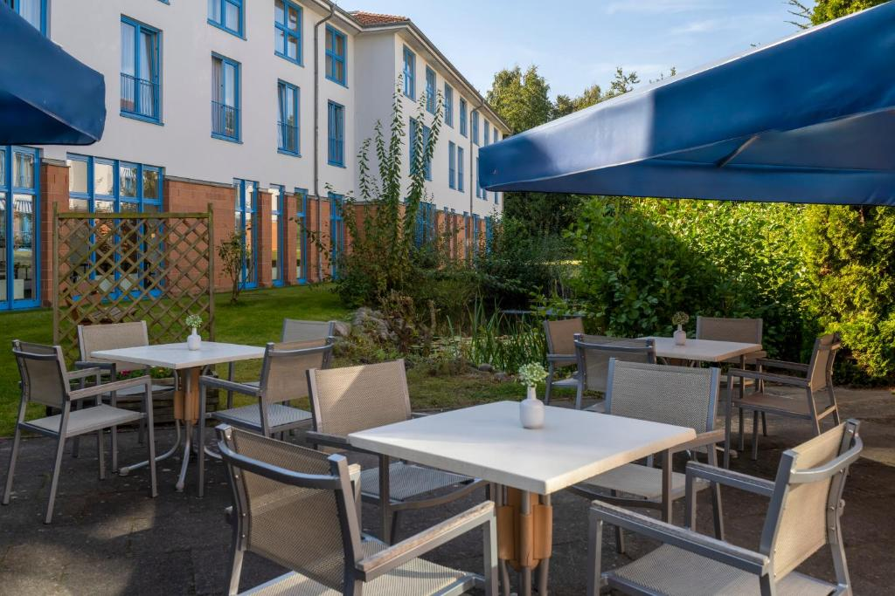
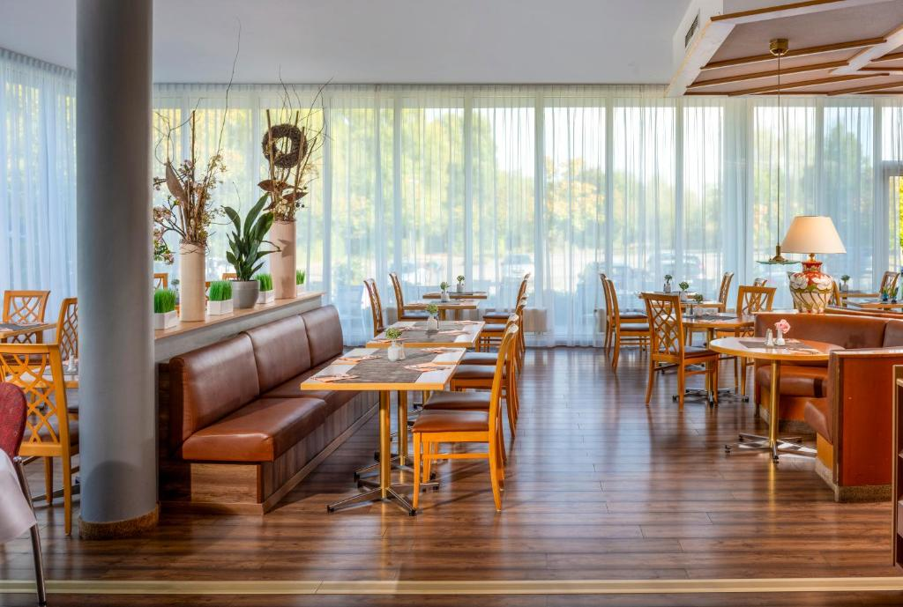

At Sunday Hotel Wismar, we invite you to enjoy the flavors of the region. Our restaurant team takes pride in serving fresh, seasonal and regional dishes in a warm and welcoming atmosphere.

Our sun-filled Bellevue restaurant is the heart of our culinary offering. Start your day with a generous breakfast buffet featuring fresh bread, regional cheeses and cold cuts, egg dishes, fruits, cereals and hot beverages. In the evening, enjoy a varied dinner buffet or a carefully crafted 3-course menu using regional and seasonal ingredients from Mecklenburg.
Breakfast: daily from 7:00 a.m. – 10:30 a.m.

In the evening, Bellevue Restaurant welcomes you with a varied dinner buffet or a carefully prepared 3-course menu. Enjoy seasonal ingredients, regional flavors and relaxed service after a day in Wismar or along the Baltic coast.
Dinner: daily, times may vary — please check at reception.

After dinner or a long day of sightseeing, our cozy WisBar invites you to relax with a refreshing drink, a glass of regional wine or one of our famous cocktails. The friendly atmosphere makes it the perfect place to finish the day.
Perfect for evening drinks, cocktails and regional wines.

When the weather is fine, our garden terrace is the place to be. Enjoy your breakfast, afternoon coffee or evening drink in the fresh Mecklenburg air, surrounded by greenery.
Open in suitable weather for breakfast, coffee and drinks.

Families are warmly welcome at Sunday Hotel Wismar. Our restaurant offers children’s menus and high-chair service, while the breakfast and dinner buffets include plenty of options young guests will enjoy. Dietary requirements can be accommodated on request.
Children’s menus and high chairs available.
From breakfast in Bellevue Restaurant to evening drinks at WisBar, discover relaxed dining in the heart of Mecklenburg.
reception.wismar@hotelssunday.com | reservations.wismar@hotelssunday.com
Contact Us